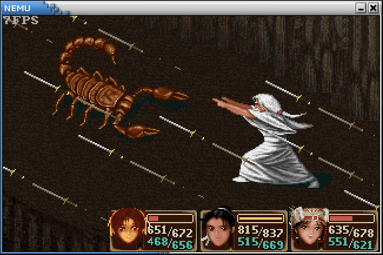

移植仙剑奇侠传
原版的仙剑奇侠传是针对Windows平台开发的, 因此它并不能在GNU/Linux中运行(你知道为什么吗?), 也不能在NEMU中运行. 网友weimingzhi开发了一款基于SDL库, 跨平台的仙剑奇侠传, 工程叫SDLPAL. 你可以通过 git clone 命令把SDLPAL克隆到本地, 然后把仙剑奇侠传的数据文件(我们已经把数据文件上传到提交网站上)放在工程目录下, 执行 make 编译SDLPAL, 编译成功后就可以玩了. 更多的信息请参考SDLPAL工程中的README说明.
把仙剑奇侠传移植到NEMU中的主要工作, 就是把应用层之下提供给仙剑奇侠传的所有API重新实现一遍, 因为这些API大多都依赖于操作系统提供的运行时环境, 我们需要根据NEMU和kernel提供的运行时环境重写它们. 主要包括以下四部分内容:
- C标准库
- 浮点数
- SDL库
- 文件系统
uclibc已经提供了C标准库的功能, 我们之前实现的 FLOAT 类型也已经解决了浮点数的问题, 因此我们可以很简单地对这两部分内容进行移植, 重点则落到了SDL库和文件系统的移植工作中.
关于浮点数有一点小小的补充. 在 game/src/nemu-pal/battle/fight.c 的代码中有一处调用了 pow() 函数, 用于根据角色的敏捷度(身法)计算在半即时战斗模式中角色的行动条变化量. 在SDLPAL中, 此处调用的 pow() 函数计算的是 x^0.3 , 但 FLOAT 版本的通用 pow() 函数实现相对麻烦, 根据KISS法则, 我们把此处调用修改成 x^(1/3) , lib-common/FLOAT.c 中实现的 pow() 函数用来专门计算 x^(1/3) , 采用的是nth root algorithm.
我们把待移植的仙剑奇侠传称为NEMU-PAL. NEMU-PAL在SDLPAL的基础上经过少量修改得到, 包括去掉了声音, 修改了 game/src/nemu-pal/device/input.c 中和按键相关的处理, 把我们关心的和SDL库的实现整理到 game/src/nemu-pal/hal 目录下, 一些我们不必关心的实现则整理到 game/src/nemu-pal/unused 目录下, 同时还对浮点数用binary scaling进行了处理.
为了编译NEMU-PAL, 你需要修改 game/Makefile.part 中的 GAME 变量, 从打字小游戏切换到NEMU-PAL. 然后把仙剑奇侠传的数据文件放在 game/src/nemu-pal/data 目录下, 工程目录下执行 make game 即可.
下面来谈谈移植工作具体要做些什么. 在这之前, 请确保你已经理解打字小游戏的工作方式.
重写SDL库的API
在SDLPAL中, SDL库负责时钟, 按键, 显示和声音相关的处理. 由于在NEMU中没有模拟声卡的实现, NEMU-PAL已经去掉了和声音相关的部分. 其余三部分的内容被整理到 game/src/nemu-pal/hal 目录下, 其中HAL(Hardware Abstraction Layer)是硬件抽象层的意思, 和硬件相关的功能将在HAL中被打包, 提供给上层使用.
时钟相关
SDL_GetTicks()用于返回用毫秒表示的当前时间(从运行游戏时开始计算).SDL_Delay()用于延迟若干毫秒.jiffy变量记录了时钟中断到来的次数, 通过它可以实现上述和时钟相关的控制功能.
键盘相关
键盘通常都支持"重复按键", 即若一直按着某一个键不松开, 键盘控制器将会不断发送该键的扫描码. 但是SDLPAL(包括待移植的NEMU-PAL)的游戏逻辑是在基于"非重复按键"的特性编写的, 即若一直按着某一个键不松开, SDLPAL只会收到一次该键的扫描码. 因此HAL需要把键盘的"重复按键"特性屏蔽起来, 向上层提供"非重复按键"的特性.
- 实现这一抽象的方法是记录按键的状态. 你需要在键盘中断处理函数
keyboard_event()中编写相应代码, 根据从键盘控制器得到的扫描码记录按键的状态. process_keys()函数会被NEMU-PAL轮询调用. 每次调用时, 寻找一个刚刚按下或刚刚释放的按键, 并调用相应的回调函数, 然后改变该按键的状态. 若找到这样的按键, 函数马上返回true; 若找不到, 函数返回false. 注意返回之前需要打开中断.- 代码中提供了数组的实现方式用于记录按键的状态, 你也可以使用其它方式来实现上述抽象.
显示相关
SDL中包含很多和显示相关的API, 为了重写它们, 你首先需要了解它们的功能. 通过 man 命令查阅以下内容:
SDL_SurfaceSDL_RectSDL_BlitSurfaceSDL_FillRect
在 game/src/nemu-pal/include/hal.h 中已经定义了相关的结构体, 你需要阅读 man , 了解相关成员的功能, 然后实现 game/src/nemu-pal/hal/video.c 中相应函数的功能. 你可以忽略 man 中提到的"锁"等特性, 我们并不打算在NEMU-PAL中实现这些特性.
实现简易文件系统
对于大部分游戏来说, 游戏用到的数据所占的空间比游戏逻辑本身还大, 因此这些数据一般都存储在磁盘中. IDE驱动程序已经为我们屏蔽了磁盘的物理特性, 并提供了读写接口, 使得我们可以很方便地访问磁盘某一个位置的数据. 但为了易于上层使用, 我们还需要提供一种更高级的抽象, 那就是文件.
文件的本质就是字节序列, 另外还由一些额外的属性构成. 在这里, 我们只讨论磁盘上的文件. 这样, 那些额外的属性就维护了文件到磁盘存储位置的映射. 为了管理这些映射, 同时向上层提供文件操作的接口, 我们需要在kernel中实现一个文件系统.
不要被"文件系统"四个字吓到了, 我们需要实现的文件系统并不是那么复杂, 这得益于NEMU-PAL的一些特性: 对于大部分数据文件来说, NEMU-PAL只会读取它们, 而不会对它们进行修改; 唯一有可能进行文件写操作的, 就只有保存游戏进度, 但游戏存档的大小是固定的. 因此我们得出了一个重要的结论: 我们需要实现的文件系统中, 所有文件的大小都是固定的. 既然文件大小是固定的, 我们自然也可以把每一个文件分别固定在磁盘中的某一个位置. 这些很好的特性大大降低了文件系统的实现难度, 当然, 真实的文件系统远远比这个简易文件系统复杂.
我们约定磁盘的最开始用于存放NEMU-PAL游戏程序, 从1MB处开始一个挨着一个地存放数据文件:
0 1MB
+------------+----------+----------+---------+----------+------------+----
| | | | | | |
| NEMU-PAL | | 1.rpg | 2.rpg | ...... | word.dat |
| | | | | | |
+------------+----------+----------+---------+----------+------------+----
kernel/src/fs/fs.c 中已经列出了所有数据文件的信息, 包括文件名, 文件大小和文件在磁盘上的位置. 但若只有这些信息, 文件系统还是不能表示文件在读写时的动态信息, 例如读写位置的指针等. 为此, 文件系统需要为那些打开了的文件维护一些动态的信息:
在这里, 我们只需要维护打开状态 opened 和读写指针 offset 即可. 由于这个简易文件系统中的文件数目是固定的, 我们可以为每一个文件静态分配一个 Fstate 结构, 因此我们只需要定义一个长度为 NR_FILES + 3 的 Fstate 结构数组即可. 这里的 3 包括 stdin , stdout , stderr 三个特殊的文件, 磁盘中的第 k 个文件固定使用第 k + 3 个 Fstate 结构. 这样, 我们就可以把 Fstate 结构在数组中的下标作为相应文件的文件描述符(fd, file descriptor)返回给用户层了.
有了 Fstate 结构之后, 我们就可以实现以下的文件操作了:
这些文件操作实际上是相应的系统调用在内核中的实现, 你可以通过 man 查阅它们的功能, 例如
man 2 open
其中 2 表示查阅和系统调用相关的man page. 实现这些文件操作的时候注意以下几点:
- 由于简易文件系统中每一个文件都是固定的, 不会产生新文件, 因此"
fs_open()没有找到pathname所指示的文件"属于异常情况, 你需要使用assertion终止程序运行. - 使用
ide_read()和ide_write()来进行文件的读写. - 由于文件的大小是固定的, 在实现
fs_read()和fs_lseek()的时候, 注意读写指针不要越过文件的边界. - 除了写入
stdout和stderr之外(即输出到串口), 其余对于stdin,stdout和stderr这三个特殊文件的操作可以直接忽略.
最后你还需要在kernel中编写相应的系统调用, 来调用相应的文件操作.
在kernel的框架代码中, IDE驱动程序让磁盘工作在PIO模式下. 在PIO模式下, CPU需要主动向磁盘读写数据. 现代的磁盘大多都支持DMA模式, DMA模式使得直接在磁盘和内存之间传输数据成为可能, 传输过程不需要CPU参与. 如果访问磁盘的频率很高, 使用DMA模式可以在一定程度上提高CPU工作的效率. NEMU-PAL常常需要从磁盘中读取数据文件, 我们可以尝试使用DMA模式来进行磁盘的读操作, 体会DMA的工作方式.
我们使用的DMA方式称为Bus Master DMA. 在介绍具体的编程步骤之前, 我们需要介绍PRD(Physical Region Descriptor)的概念. PRD的结构如下:
31 23 15 7 0
+-+---------------------------------+---------------------------------+-+
|E| | | |
|O| Reserved | Byte Count [15:1] |0| 4
|T| | | |
+-+---------------------------------+---------------------------------+-+
| | |
| Memory Region Physical Base Address [31:1] |0| 0
| | |
+---------------------------------------------------------------------+-+
一个PRD用来描述一段按双字节对齐, 长度为偶数字节的物理内存区域, 其中 Base Address 是这段区域的首地址, Byte Count 是这段区域的长度. PRDT是一个数组, 数组的每一个元素是一个PRD, 特别地, 数组中的最后一个PRD的 EOT 位需要被置为 1 , 表示"end of table". 在Bus Master DMA中, 一个PRD描述了一次DMA传输中内存位置的信息.
使用Bus Master DMA进行磁盘的读操作具体需要进行以下步骤:
- 在内存中准备PRDT.
- 将PRDT的首地址写入DMA控制器中的描述附表指针寄存器(Descriptor Table Pointer Register).
- 将待读扇区和长度等信息写入磁盘相应的寄存器.
- 向DMA控制器发送读命令.
- DMA控制器将根据传输请求将数据从磁盘传输在内存, 传送完成后, 磁盘会向CPU发送中断.
你需要做的事情是在 kernel/src/driver/ide/dma.c 中编写代码: 准备一个只有一项的PRDT, 填写这一表项的内容(缓冲区地址, 长度为512字节), 然后把PRDT的首地址装入相应的设备寄存器中. 需要注意的是, 这些地址都必须是物理地址, 你知道为什么不能是虚拟地址吗?
实现上述要求后, 在 kernel/src/driver/ide/disk.c 中定义宏 USE_DMA_READ , 重新编译并运行. 但你会发现IDE驱动并没有正常工作, 我们没有从IDE驱动中读出预期的数据. 这个问题和cache有关, 你能想明白为什么吗? 事实上在现代x86处理器的分页机制中, 页目录项和页表项有一位叫 PCD 的属性位, 当该属性位被置 1 时, 访问涉及到的物理页面时将不会经过cache. 一般来说, 操作系统会通过 PCD 位的功能把DMA用到的页面设置为不可缓存, 这样就不会出现上述问题了. 不过实现这一功能还需要对NEMU和kernel进行较多改动, 我们可以采取一种简单暴力的的方法: 把NEMU中的cache关掉, 让 hwaddr_read() 和 hwaddr_write() 直接访问dram.
由于我们的kernel是单任务的, 在发送DMA传输命令之后只能等待磁盘的中断, 无法切换到别的进程执行, 因此我们并不能完全体会到DMA的好处. 另外为了遵循KISS法则, 这一部分的代码省略了较多细节, 使得DMA部分的代码并不一定能在真机或完整的模拟器(如QEMU)中成功运行, 反之亦然. 即使这样, 这个练习仍然可以加深你对DMA的认识.
根据课堂上学习到的知识以及实验内容, 思考一下, 一个用户程序执行如下代码(其中 fp 是磁盘上某个文件的文件指针):
fprintf(fp, "Hello World!\n");
在这个过程中, 计算机是如何把字符串写入到磁盘的文件中的?
终于到了激动人心的时刻了! 根据上述讲义内容, 完成仙剑奇侠传的移植. 在我们提供的数据文件中包含一些游戏存档, 可以读取迷宫中的存档, 与怪物进行战斗, 来测试实现的正确性.

网上流传着一些关于仙剑奇侠传的秘技, 其中的若干条秘技如下:
- 很多人到了云姨那里都会去拿三次钱，其实拿一次就会让钱箱爆满！你拿了一次钱就去买剑把钱用到只剩一千多，然后去道士那里，先不要上楼，去掌柜那里买酒，多买几次你就会发现钱用不完了。
- 不断使用乾坤一掷(钱必须多于五千文)用到财产低于五千文,钱会暴增到上限如此一来就有用不完的钱了
- 当李逍遥等级到达99级时，用5～10只金蚕王，经验点又跑出来了，而且升级所需经验会变回初期5～10级内的经验值，然后去打敌人或用金蚕王升级，可以学到灵儿的法术（从五气朝元开始）；升到199级后再用5～10只金蚕王，经验点再跑出来，所需升级经验也是很低，可以学到月如的法术（从一阳指开始）；到299级后再用10～30只金蚕王，经验点出来后继续升级，可学到阿奴的法术（从万蚁蚀象开始）
假设这些上述这些秘技并非游戏制作人员的本意, 请尝试解释这些秘技为什么能生效.
PA4到此结束. 请你编写好实验报告(不要忘记在实验报告中回答必答题), 然后把命名为 学号.pdf 的实验报告文件放置在工程目录下, 执行 make submit 对工程进行打包, 最后将压缩包提交到指定网站.